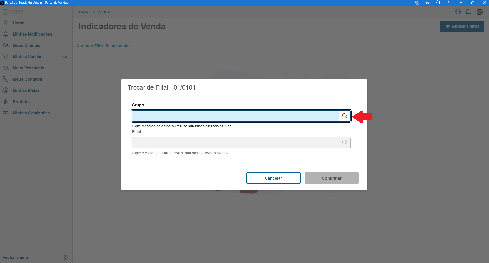
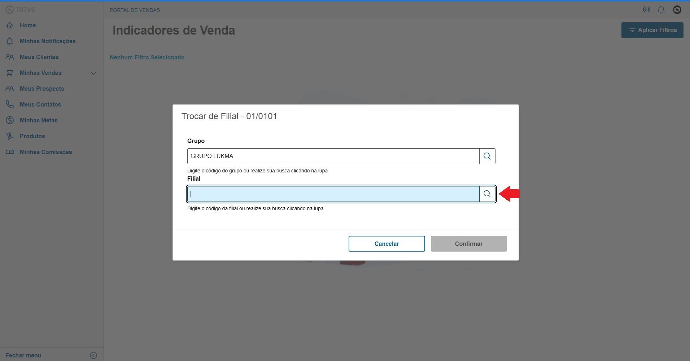
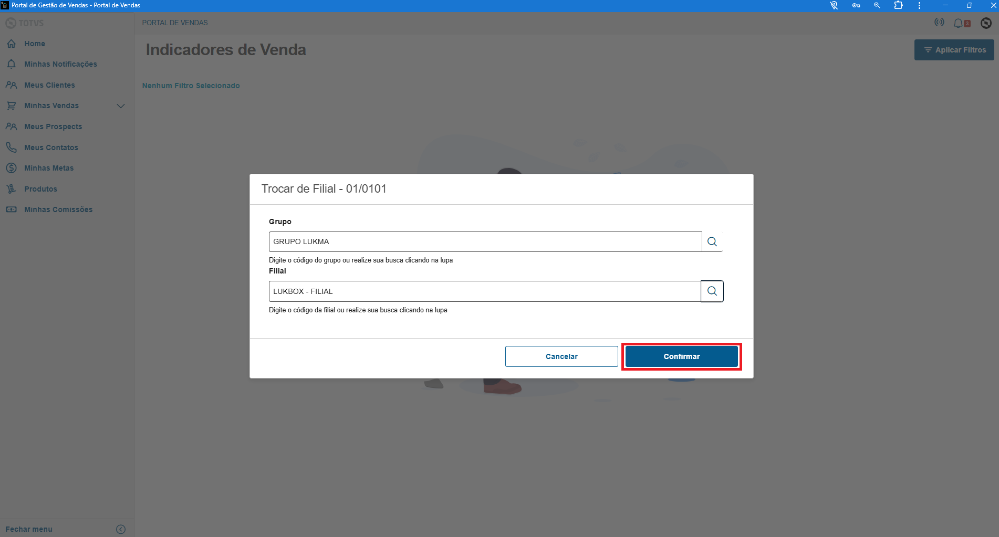
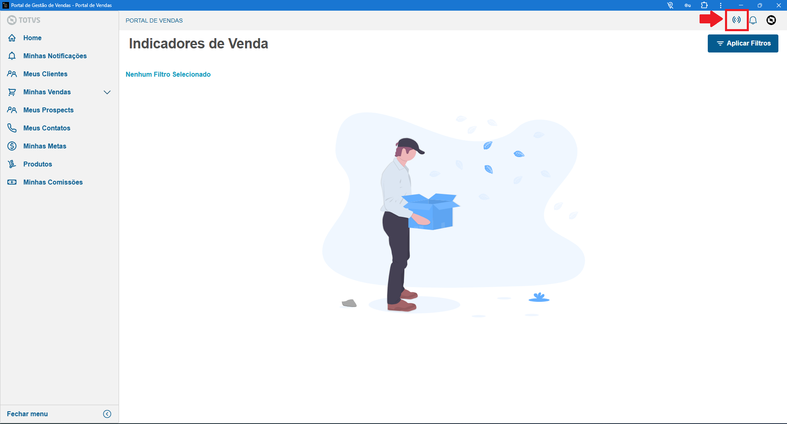
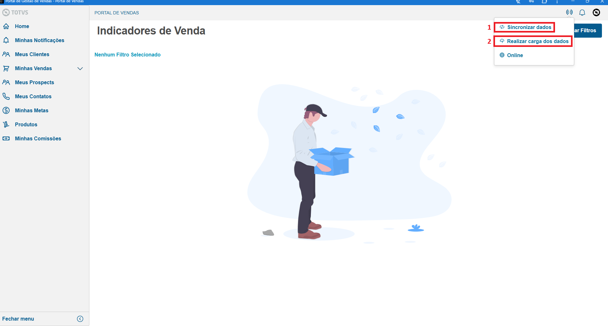

Ferramentas localizadas no canto superior direito da tela.
1- Clique no botão informado no print acima
2- Clique em Trocar filial Clique na Lupa no campo de Grupo

1-Selecione o GRUPO LUKMA
2-Confirme
Clique na Lupa no campo de Filial

1- Selecione a LUKBOX-FILIAL, se desejar voltar para matriz selecioneLUKBOX
2- Confirme
Confirme a troca
Caso alguns menus ou preço de produtos não estejem carregando realize o processo de sincronizar dados
Clique no icone informado no print acima
1- Clique em Sincronizar Dados e aguarde a mensagem de concluido
2- Clique em Realizar carga de dados